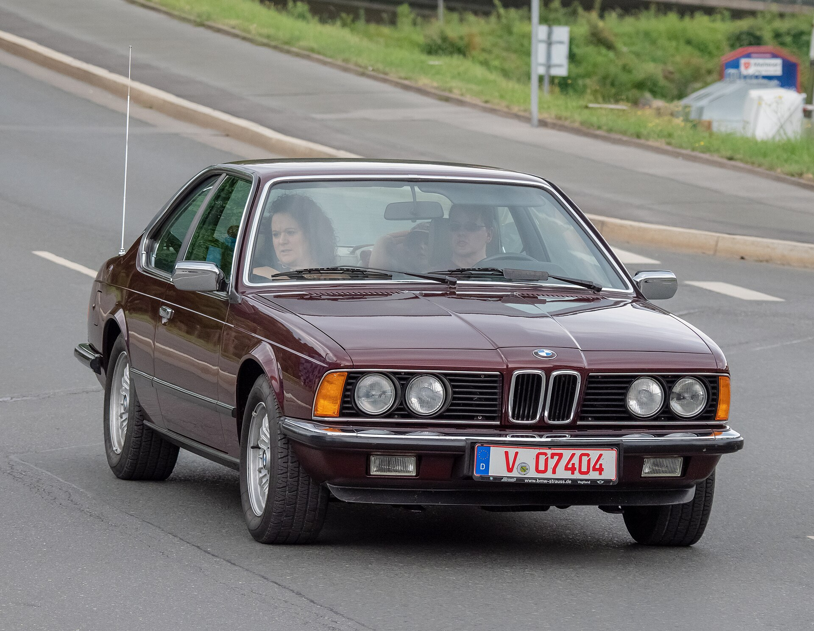
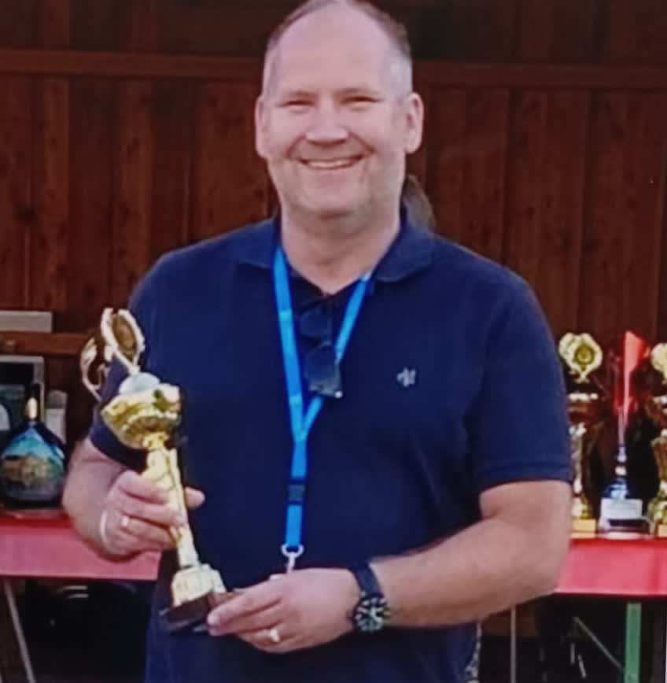
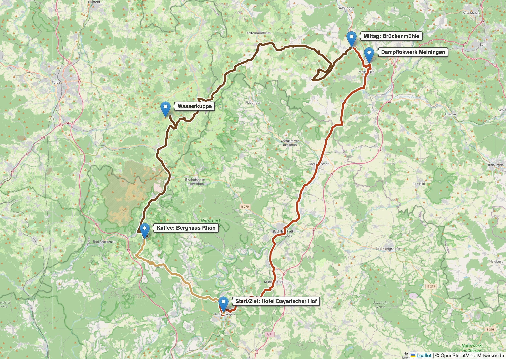
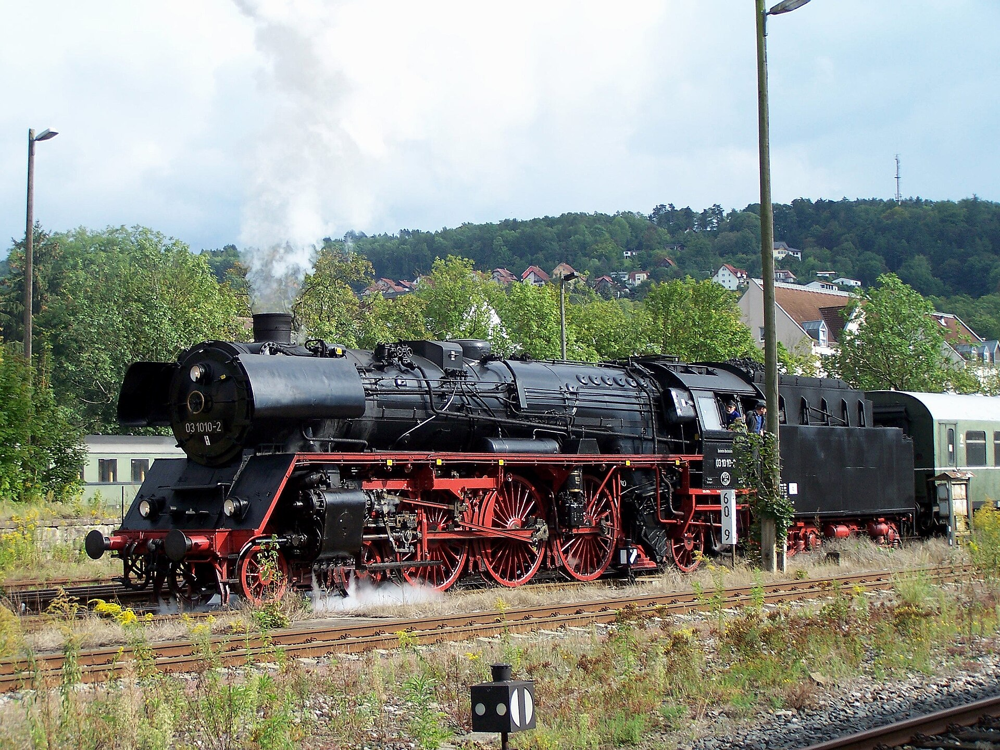
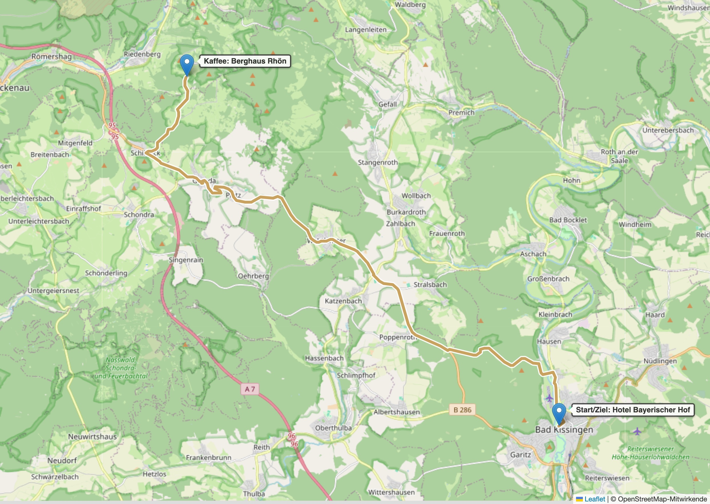
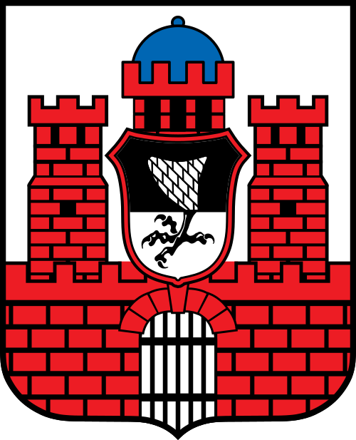
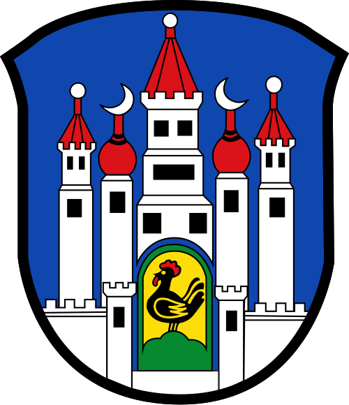
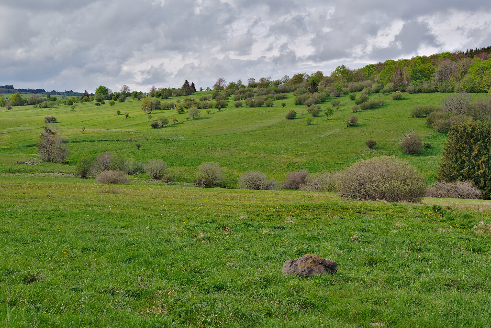
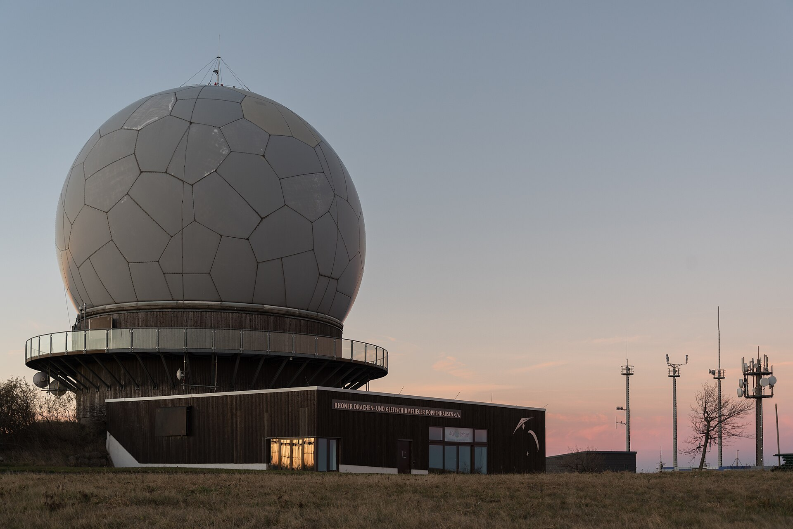

Bad Kissingen → Dampflokwerk Meiningen → Hohe Rhön & Wasserkuppe → Bad Kissingen. Ein Tag, drei Etappen, drei Bundesländer – und Kurven, für die dieser Wagen gebaut wurde.

Foto: Ermell, BMW 635 CSi (E24), CC BY-SA 4.0
07:30 Start
180 Kilometer
3 Bundesländer
10:00 Werksführung
950 m Wasserkuppe
17:45 Rückkehr
Herzlich willkommen!

Liebe 6er-Freunde,
schön, dass ihr dabei seid! Vor uns liegen rund 180 Kilometer durch drei Bundesländer: Kurven durch die Hohe Rhön, ein Blick hinter die Tore des Dampflokwerks Meiningen und genug Pausen für Benzingespräche, Thüringer Küche und Kaffee mit Aussicht. Unsere Haifischnasen wurden für genau solche Tage gebaut.
Fahrt entspannt, haltet den Konvoi zusammen und habt Spaß. Und wer am Ende die meisten Bingo-Felder voll hat, muss trotzdem keine Runde ausgeben – versprochen.
Gute Fahrt und allzeit freie Strecke! Euer Markus Renner Tourleitung
Ablaufplan
Wir fahren im geschlossenen Konvoi und gemütlich – die Zeiten sind mit Puffer gerechnet. Wichtigster Fixpunkt des Tages: die Werksführung im Dampflokwerk beginnt pünktlich um 10:00 Uhr.
07:00Eintreffen am Hotel Bayerischer HofAufstellung auf dem Parkplatz, Fahrzeugcheck, Roadbook-Ausgabe, Kaffee aus der Thermoskanne
07:30Start Etappe 1 – Bad Kissingen → Meiningen68,6 km über B287 und B279, ca. 2 h 15 im Konvoi
09:45Ankunft Dampflokwerk MeiningenParken, Sammeln an der Pforte
10:00Werksführung Dampflokwerk90 Minuten – Lokhalle, Anheizhaus, Kesselschmiede. 6 € p. P., nur Barzahlung, festes Schuhwerk!
11:45Kurze Stadtfahrt zur Brückenmühleca. 15 Minuten, am Meininger Theater vorbei
12:00Mittagessen – Gasthof BrückenmühleThüringer Küche in Walldorf an der Werra
13:30Start Etappe 2 – Meiningen → Berghaus Rhön86,3 km durch die Hohe Rhön und über die Wasserkuppe, ca. 2 h 30
16:00Kaffee & Kuchen – Berghaus RhönEinkehr in den schwarzen Bergen bei Riedenberg
17:00Start Etappe 3 – Rückfahrt nach Bad Kissingen25,5 km über die B286, ca. 45 Minuten
17:45Ankunft Hotel Bayerischer Hof – AusklangSonnenuntergang 18:55 Uhr: wir sind rechtzeitig zurück
Die Strecke
Ein Rundkurs von rund 180 Kilometern: aus dem Saaletal hinauf nach Thüringen, quer durch das Biosphärenreservat Rhön und über den höchsten Berg Hessens wieder zurück nach Unterfranken.

Etappe 1 · 68,6 km Etappe 2 · 86,3 km Etappe 3 · 25,5 km
START Hotel Bayerischer Hof – Ausfahrt Hotelparkplatz nach rechts in die Maxstraße
2
Straßenverlauf folgen in die Theresienstraße
3
Rechts abbiegen in die Ludwigstraße
4
Nach der Ludwigsbrücke rechts in die Bismarckstraße, Richtung Saline/Flugplatz
5
Geradeaus am Flugplatz vorbei
6
Rechts in die Klaushofstraße abbiegen und über die Nordbrücke fahren
7
Rechts in die Straße Untere Saline abbiegen
8
Immer geradeaus: dem Nordring, dann dem Ostring folgen
9
Große Ampelkreuzung: links auf die B287 Münnerstädter Straße nach Nüdlingen
10
Immer geradeaus bis Nüdlingen und durch Nüdlingen hindurch
11
Große Ampelkreuzung: rechts auf die B287 nach Münnerstadt
12
Nach dem Ortseingang Münnerstadt der B287 folgen bis zur großen Ampelkreuzung
13
Links auf die B287 Meininger Straße, Richtung Bad Neustadt
14
Bis Bad Neustadt immer geradeaus
15
Kreisel Bad Neustadt: zweite Ausfahrt, weiter geradeaus
16
Durch Bad Neustadt bis zur Ampelkreuzung: rechts auf die B279 Richtung Mellrichstadt
17
Immer geradeaus Richtung Mellrichstadt
18
In Mellrichstadt rechts der Vorfahrtstraße folgen
19
Kreisel: zweite Ausfahrt Richtung Meiningen
20
Am Bahnhof vorbei
21
Nächster Kreisel: zweite Ausfahrt Richtung Meiningen
22
Ampelkreuzung: rechts in die Meininger Landstraße Richtung Meiningen
23
Der Straße weiter folgen
24
Vor Henneberg links in die Henneberger Straße Richtung Meiningen
25
Kreisel: zweite Ausfahrt, weiter auf der Henneberger Straße
26
Durch Meiningen fahren bis zur Querstraße mit Ampel Fester Blitzer an der Ortseinfahrt Meiningen – Tempo 50!
27
Links in die Marienstraße abbiegen, Richtung Suhl/Eisenach
28
Am Meininger Theater vorbei
29
Durch die Eisenbahnbrücke hindurch
30
Gleich nach der Eisenbahnbrücke rechts in den Templerweg
31
Nach der Eisenbahnunterführung rechts auf den Parkplatz – Ziel: Dampflokwerk Meiningen. Treffpunkt Pforte zur Besichtigung um 10:00 Uhr
Nach der Führung: Weiterfahrt zum Mittagessen
32
Parkplatz nach rechts verlassen
33
Gleich wieder rechts auf die Ernststraße
34
Halb links auf die Robert-Koch-Straße
35
Weiter geradeaus in die Adelheidstraße
36
Nach rechts in die Rohrer Straße
37
Durch die Eisenbahnunterführung geradeaus, weiter auf der Marienstraße
38
Wieder am Meininger Theater vorbei
39
Nach dem Theater an der Ampel links in die Landsberger Straße
40
Der Straße folgen bis zum Gasthof Brückenmühle – Parkplatz rechte Seite. Mittagessen!

Dampflokwerk Meiningen
Am Flutgraben 2, 98617 Meiningen Tel. 03693 851602
Führung 10:00–11:30 Uhr · 6 € pro Person, nur Barzahlung · festes Schuhwerk erforderlich · Treffpunkt an der Pforte
Mittag: Gasthof Brückenmühle
Brückenmühle 2, 98617 Meiningen OT Walldorf Tel. 03693 801004
Restaurant täglich 11–22 Uhr · Thüringer und italienische Küche (Mittagskarte u. a. Thüringer Rinderroulade, Schweinebraten mit Sauerkraut, gebratene Kloßscheiben) · Parkplatz für die Kolonne rechts
Samstags 10–22 Uhr geöffnet · Einkehr mit Aussicht in den „schwarzen Bergen" · Tischreservierung nur telefonisch
3
Etappe 3: Berghaus Rhön → Bad Kissingen
25,5 km0:45 h KonvoiStart 17:00Ziel: Hotel Bayerischer Hof

1
Die Straße beim Berghaus Rhön weiterfahren bis Schildeck
2
Auf die B286 nach links abbiegen Richtung Bad Kissingen
3
Nach Poppenroth links abbiegen Richtung Klaushof
4
Am Klaushof vorbei Richtung Bad Kissingen
5
Nach der Nordbrücke rechts abbiegen Richtung Stadtmitte
6
Am nächsten Abzweig links in die Salinenstraße Wird zur Tempo-30-Zone!
7
An der Kreuzung nach rechts in die Maxstraße
8
ENDE: Am Hotel rechts auf den Parkplatz – willkommen zurück in Bad Kissingen!
Unterwegs – zum Vorlesen für den Beifahrer

Bad Kissingen
Foto: Holger Uwe Schmitt, Der Regentenbau in Bad Kissingen, CC BY-SA 4.0
Unser Start- und Zielort gehört seit 2021 zum UNESCO-Welterbe „Bedeutende Kurstädte Europas". Im 19. Jahrhundert kurte hier halb Europa: Kaiserin Sisi, Zar Alexander II. und Otto von Bismarck, der Bad Kissingen fünfzehn Mal besuchte. Der Regentenbau und die Wandelhalle zählen zu den prächtigsten Kurbauten des Kontinents.
Dampflokwerk Meiningen
Dampflok 03 1010 bei den Meininger Dampfloktagen – Foto: Urmelbeauftragter, CC BY-SA 3.0
Seit 1914 werden in Meiningen Dampflokomotiven ausgebessert – heute ist es das letzte Werk der Deutschen Bahn, das Dampfloks komplett hauptuntersuchen, reparieren und sogar neu bauen kann. Museumsbahnen aus ganz Europa schicken ihre Maschinen hierher. In der Lokhalle stehen die Kessel, Radsätze und Gestänge, die anderswo längst Museumsstücke wären, noch in der laufenden Produktion.

Meiningen & das Meininger Theater
Die Werra-Stadt war im 19. Jahrhundert eine Theatermacht: Herzog Georg II., der „Theaterherzog", revolutionierte mit seiner Truppe die Schauspielkunst – historisch genaue Kostüme, Ensemblespiel statt Stardenkerei. Die „Meininger" gastierten in ganz Europa und prägten das moderne Regietheater. Wir fahren auf beiden Stadtdurchfahrten direkt am klassizistischen Theaterbau vorbei.
Die Hohe Rhön

Foto: Ursula Jaeger, Landschaft im NSG Lange Rhön, CC BY-SA 4.0
Das „Land der offenen Fernen": ein UNESCO-Biosphärenreservat über drei Bundesländer. Die baumarmen Hochflächen der Langen Rhön sind kein Urzustand, sondern Jahrhunderte alte Kulturlandschaft – von Schafherden offen gehalten. Auf Etappe 2 wechseln wir mehrfach zwischen Thüringen, Hessen und Bayern; in Dörfern wie Birx verlief bis 1989 die innerdeutsche Grenze keine zwei Kilometer entfernt.
Wasserkuppe

Foto: Tilman2007, Wasserkuppe, Radom, bei Sonnenuntergang, CC BY-SA 4.0
Mit 950 Metern der höchste Berg Hessens – und die Wiege des Segelflugs. Ab 1911 ließen sich hier die ersten Flugschüler von den Hängen tragen; bis heute starten an guten Tagen ganze Ketten von Segelflugzeugen. Die weiße Kugel auf dem Gipfel, das Radom, war im Kalten Krieg eine amerikanische Radarstation und ist heute das Wahrzeichen der Rhön. Wir fahren direkt über den Berg.
Schwedenschanze & die schwarzen Berge
Der Name der Passhöhe an der B279 erinnert an Verschanzungen aus dem Dreißigjährigen Krieg. Dahinter beginnen die „schwarzen Berge", der dunkel bewaldete Südwestrand der Rhön – dort liegt unser Kaffeestopp, das Berghaus Rhön oberhalb von Riedenberg.
Konvoi-Regeln
Der Vordermann ist dein Kompass. Jeder orientiert sich am Fahrzeug vor sich – nicht am Spitzenfahrzeug. Den Hintermann im Spiegel behalten.
Niemand geht verloren. Wer den Anschluss verliert: kein Stress, keine Rennmanöver. An unklaren Abzweigen wartet das vorausfahrende Fahrzeug sichtbar.
Ampeln reißen den Konvoi. Wer es bei Gelb nicht mehr schafft, hält an. Die Gruppe vor der Ampel fährt langsam weiter, bis alle wieder aufgeschlossen haben.
Lücken lassen. Ortsdurchfahrten und Landstraße: genug Abstand zum Überholen für Dritte. Wir sind ein Ausflug, kein Straßensperrwerk.
Tempo-Disziplin. Tempo 30 in Stepfershausen und der Salinenstraße ernst nehmen – die Anwohner sollen uns in guter Erinnerung behalten. Zwei feste Blitzer sind im Roadbook markiert (Ortseinfahrt Meiningen, B279 bei Gersfeld).
Der Besenwagen fährt zuletzt. Das Schlussfahrzeug hat Werkzeug, Abschleppseil und Überbrückungskabel an Bord. Niemand bleibt allein am Straßenrand.
Panne? Warnblinker an, raus aus der Fahrbahn, Warnweste an, Orga anrufen. Der Konvoi fährt weiter – der Besenwagen hält bei dir.
Tanken. Vollgetankt zum Start erscheinen. Die Strecke hat wenige Tankstellen – Reserve im Blick behalten.
Eure Tourleitung: Markus Renner
Plant und führt diese Ausfahrt. Bei Fragen vor dem Start oder unterwegs: ansprechen oder anrufen – Nummer im Notfallkasten unten.
Notfall & Kontakte
Tourleitung
Markus Renner · Mobilnummer eintragen
Besenwagen
Name + Mobilnummer eintragen
Notruf
112 (Rettung) · 110 (Polizei)
Pannenhilfe
ADAC 089 20 20 4000
Dampflokwerk
03693 851602
Brückenmühle
03693 801004
Berghaus Rhön
09749 9307721
Checkliste für die Tourleitung (vorab)
Dampflokwerk: Gruppenanmeldung (ab 6 Personen Pflicht) – 03693 851602 / mail@dampflokwerk.de
Alle erinnern: Bargeld für die Werksführung (6 € p. P.), festes Schuhwerk
Strecke in der Woche vorher auf Baustellen prüfen
Teilnehmer & Fahrzeuge
Startreihenfolge = Listenreihenfolge. Wird beim Briefing festgelegt.
Fahrer / Beifahrer
Fahrzeug
Baujahr
Farbe
Mobil
1
2
3
4
5
6
7
8
9
10
11
12
13
14
15
Für unterwegs
Das Strecken-Quiz
Für Beifahrer mit Ehrgeiz – Auflösung unten (Heft drehen).
Seit wann werden in Meiningen Dampflokomotiven ausgebessert?
Wie heißt der Herzog, der das Meininger Theater weltberühmt machte?
Wie hoch ist die Wasserkuppe?
Was war das Radom auf der Wasserkuppe im Kalten Krieg?
Welcher Sport wurde auf der Wasserkuppe erfunden?
Durch wie viele Bundesländer führt unsere Tour?
An welchen Krieg erinnert der Name „Schwedenschanze"?
Welcher berühmte Kurgast besuchte Bad Kissingen fünfzehn Mal?
Auflösung: 1) Seit 1914 2) Georg II., der „Theaterherzog" 3) 950 Meter 4) Eine amerikanische Radarstation 5) Der Segelflug 6) Drei – Bayern, Thüringen, Hessen 7) An den Dreißigjährigen Krieg 8) Otto von Bismarck
Ausfahrt-Bingo
Wer zuerst eine Reihe voll hat, ruft es beim nächsten Stopp in die Runde. Der Gewinn: Ruhm.